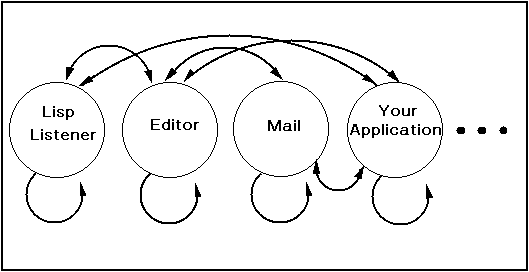
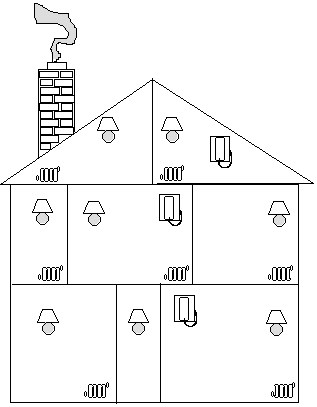
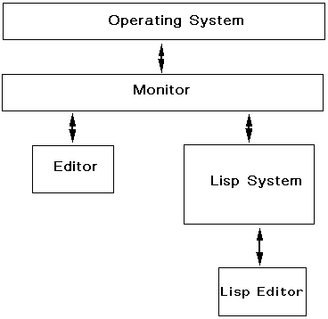
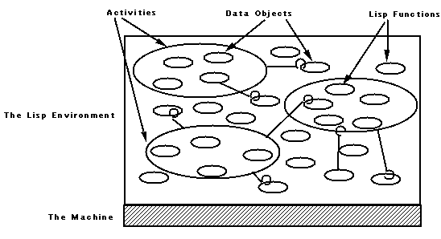
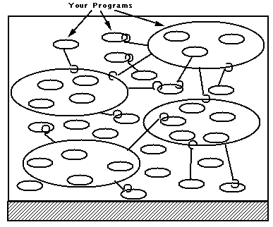
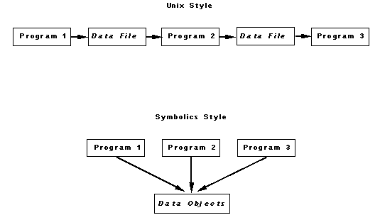
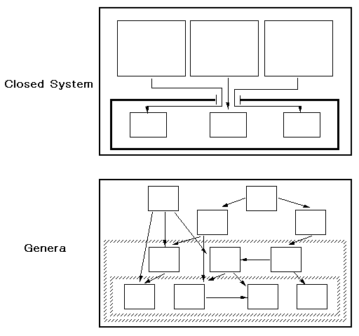
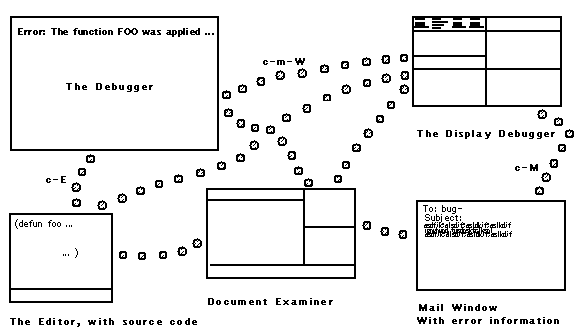
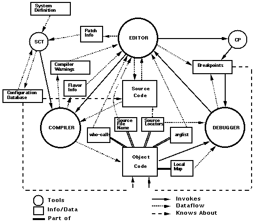

Web version by Rainer Joswig, joswig@lisp.de, lispm.dyndns.org.
See also the Genera Screenshots I made.
There is also a collection of screenshots of various applications.
This Quicktime Video gives an impression of the interaction with Genera (more movies here: Home).
Genera Concepts
Genera - The Best Software Environment Available
To all our new users: Welcome.
This conceptual introduction explains what your Symbolics computer
is all about. We urge you to at least skim it before you start daily
work with the system. We try here to summarize some of the "big
picture" concepts in your new software environment; knowing about
this framework will help you in learning its details more efficiently.
Most new users of Symbolics machines have worked on traditional
time-sharing systems, such as VAX/VMS, or on microcomputers or
conventional UNIX workstations. ("Genera Comparison Charts" shows
some equivalents between these systems and Genera.) If you feel
somewhat uneasy about learning how to use the most advanced software
environment around, relax!
You don't have to learn everything at once in order to do anything -
look at this as a long-term, incremental learning project. You don't
have to learn everything by yourself. Our documentation and Genera
itself are here to help you.
Genera and Symbolics Common Lisp dramatically increase your productivity
and efficiency by providing many built-in software facilities
(similar to library routines) that you would otherwise have to write
yourself. Our edit-compile-debug cycle happens so fast that you are
virtually editing, compiling, and debugging simultaneously. The editor,
compiler and debugger are all resident utilities, available anytime, anywhere.

Figure 1. Your view of Genera's command level.
Genera has no "command levels" or separate "command environments" -
you can get there from here. You can move directly from any
application to any other application, usually with just two keystrokes.
You do not have to close one application to enter another. (See Figure 1.)
Many different activities, such as the editor and electronic mail, run
at the same time in separate processes. That means you can move
around the system from one application to another without affecting
the state of other applications. For example, you can move directly
from editing a file to reading online documentation to sending mail
and back to editing the file.
To illustrate the basic environmental concept, suppose for a moment
the house you live in were like a conventional software environment.
The electricity would be in one room, the telephone in another, the
heat in another, and the tap water in another. To access one facility,
you would have to leave the other behind, moving back to a central
access hallway that opened onto all the other rooms.
Suppose you were talking on the telephone in the telephone room. If
you wanted to turn on the light in order to write something down, you
would have to leave the telephone room, and go to the electricity
room. If you then wanted to wash your hands, you would have to
leave the electricity room and go to the water room. It would be unthinkable
to use the heat, light, or telephone in the water room.

Figure 2. House as Operating System. This house design has central
heating, electricity in every room, and so on. That is, basic services
are available or accessible in every context.
Continuing this analogy, with a house designed like Genera, you could
access electricity, heat, water, telephone, vacuuming, and so forth,
from every room (Figure 2)! As you will see when you learn more
about Genera, you can access a Genera activity in many different
ways as well.
In a conventional computer system, the operating system is the foundation
and other separate software application programs are layered
on top of the operating system. The command level (exec, monitor,
or shell) controls access to the operating system's facilities as well
as access to (invoking and terminating) the application programs (Figure 3).

Figure 3. Traditional operating systems require the user to interact
with a command monitor in order to access applications and the facilities
of the operating system.
Genera is your whole environment; it encompasses what you normally
think of as an operating system as well as everything else - system
commands and all other activities. From where you look at it, there
is no "top-level" controller or exec.
All Genera activities are themselves Lisp functions, based on a pool
of thousands of Lisp functions, all implemented in Lisp. Below those,
it's just the hardware - you never need to deal with a lower-level internal
implementation language.

Figure 4. The Lisp Environment, consisting of all the function and
data objects in virtual memory. Activities are just collections of
functions and data.
Genera is intelligent. Its many processes can communicate with each
other, and they all automatically share data. Genera keeps an internal
record of the history of almost everything that happens in the
system - command history, output history, process history, window
history, and so on.
Histories make it possible to use previous output on a window as input
to a command. The mouse can select a relevant piece of output
anywhere on the screen because the history mechanism keeps track
of the data object types of all the output. As a result, the reusable
output is completely context-sensitive.
For example, clicking on a filename in a directory listing displays the
contents of the file. When a command needs a filename argument,
clicking on that same filename gives the file to the command as an
argument. The meaning of the clicks is both context-sensitive and
intuitive. You can scoop up a piece of output in one activity and enter
it as input to another activity in a matter of seconds. With just a
few keystrokes, you can find, modify, and reuse a command that you
entered earlier in the day.
The key to Genera's intelligence is the sharing of knowledge and information
among all activities. At any time, the collection of all the
state of all the processes is called the environment (Figure 4). Any
function running in any process can use any piece of data in the environment
directly. You do not need laborious special-purpose protocols or
intermediate files.
The entire software environment, in its pristine unused state, ready
for booting, is saved on disk as a world. A world consists of all the
Lisp objects (functions, variables, windows, processes, and so on)
that make up the software environment. The world contains the fully
initialized environment, ready to boot and use.
Genera doesn't draw any boundaries around itself. It is customizable
and extensible by design. Unlike most software, it has an open architecture;
you can change anything that is part of Genera. In fact,
we encourage you to take advantage of this and to build your applications
as extensions of Genera.
The extensibility of the system is possible thanks to both its modular
design and its implementation, using highly flexible, object-oriented
data structures called flavors. Any data object defined by a flavor or
class can be customized or extended cleanly.
Object-oriented data structures are at the heart of symbolic processing
because they allow abstract descriptions of data and operations
in terms that fit well with the application. The data objects are essentially
models of the real-world objects they are implementing.
Thus programming uses a problem-solving vocabulary that matches
the terminology of the problem domain.
Genera itself was designed to be extended in a number of different
ways. You can set customizing variables and create simple files of
personal initializations (called init files), or you can extend or replace
parts of Genera itself in order to create your own special application.
When you write a program, it becomes an extension of Genera itself
(Figure 5). What you do becomes part of the world and enriches the
software environment. Because you have loaded a world into your
own standalone machine, you can customize and extend the system
without affecting the work of others. To get a fresh world, simply
boot your machine again.

Figure 5. Your Programs Become an Extension of Genera.
To sum things up, its built-in features, open architecture, intelligence,
and extensibility make Genera a new breed of software environment.
Genera can help you perform tough software development
tasks more quickly than you ever imagined possible.
As you delve deeper into the conceptual material in the next chapters,
and then begin to get hands-on practice with Genera in the
workbook, do not feel overwhelmed. You shouldn't put pressure on
yourself to learn all about a revolutionary new software environment
in a day or two. Take it easy. Try things out. Master a little at a
time. Genera fosters an incremental approach in all things, including
its own mastery.
Genera has amazing functionality and flexibility - often you can perform
any task in any application in several different ways. But do not
equate high flexibility and functionality with low usability! Genera is
also ultimately the most usable software environment available. We
want you to explore our functionality at your own pace. There is virtually
no limit to the capabilities you will discover in Genera. And
Genera will not place artificial upper limits on your creativity.
Genera - A Short Conceptual Tour
The Road to Symbolic Computing
What's the central philosophy behind the evolution of computing in
general and Genera in particular?
Free programmers from thinking about unnecessary details
and they can accomplish more. The more abstractly they
are allowed to think, the bigger and harder the problems
they can solve.
Some major advances in the history of conventional computing were
motivated by this philosophy:
- Assembly language. To avoid having to program in ones and zeros,
assemblers were invented and programmers were able to express
instructions to the computer mnemonically.
- High-level languages. To avoid having to think about the computer
hardware and instructions when solving a problem, high-level programming
languages such as FORTRAN were invented. These allowed
programmers to express solutions to problems without regard
for the particular organization of the hardware and instruction
set.
- Dynamic memory allocation. To free programmers from having to
plan the storage needs of their programs in advance, dynamic
memory allocation became available in programming languages
like Pascal and C.
Genera takes this philosophy of supporting programmers much farther,
providing the ideals of abstraction and generality in a number
of ways.
- Generic operations. When you need to add two numbers, you do not
need to care about whether one number is an integer and another is
a floating-point number. Just use the generic operation "+" all the
time, and Genera figures out how to do "+" correctly. There is no
performance penalty for this flexibility and freedom from detail -
it is handled by special hardware.
- User-defined generic operations. One of the principal gifts that object-oriented
programming gives you is the ability to define your
own generic operations. With the powerful and efficient Flavors
system, or the Symbolics implementation of CLOS, object-oriented
programming is not expensive, either; you don't pay any performance
penalties for using the power.
- Automatic storage management. Pascal and C provide dynamic
memory allocation at a price. To make use of that feature in conventional
languages, you must construct your program carefully to
manage the allocation and deallocation of memory. The details of
explicit storage management have nothing to do with the conceptual
problems that the program is trying to solve, but it's necessary
to complicate your program with those details on conventional
computers.
In Genera, programmers need not explicity allocate or deallocate
memory. Storage space is made available to a program implicitly
as it is needed and is reclaimed automatically when it is not
needed. This is called garbage collection. You don't have to think
about it at all; you can focus your attention on the problem you are
trying to solve.
Automatic, dynamic memory allocation is one of the things that
makes it easy to write large Lisp programs. The coupling of special
hardware and ingenious software on our machine makes garbage
collection very practical and inexpensive; it is neither of those
things on other machines.
- Dynamic linking. To run a program on conventional computers you
have to compile it and link and load it. On ours you just have to
compile the thing. Why think about linking? It's free, courtesy of
symbolic computing.
- Definition editing. Programmers often work on big programs, involving
thousands of routines defined in hundreds of files. The logistics
of that are staggering on conventional computers. When you
need to modify a function, you have to find it first; you end up being
a bookkeeper as well as a programmer.
In Genera, that's not necessary. All you need to know in order to
modify a function is its name. You can say "Edit the definition of
this function" and Genera takes care of the bookkeeping. That's the
right way to do it, because otherwise bookkeeping stands between
you and the problem at hand.
- Generic networking. Symbolics supplies impressive networking capabilities.
The name of the game is "heterogeneous". We can speak
DECnet to VAXes, TCP/IP to many different kinds of computers, and
SNA 3270 to IBM computers.
There are actually quite a few ways of making another vendor's
machine talk to your Symbolics machine. The good news is that
most Symbolics Genera users do not need to know anything at all
about any of these network protocols in order to use them.
The substrate of all of our networking products is called the
"Generic Network System." It does for networking what generic operations
do for programming itself. Namely, you don't have to think
about how you're going to talk to another computer; you think only
about what you want to do. Here are examples of using Chaosnet,
DECnet, and TCP/IP for file transfer:
Command: Copy File TE:RDP;Speech.Text W:>RDP>Speech.Text
Command: Copy File TE:RDP;Speech.Text GUMBO:[RDP]SPEECH.TXT
Command: Copy File TE:RDP;Speech.Text Acme:/usr/rdp/speech.txt
As this example shows, you always use the network the same way,
whether the other machine is another Symbolics machine, a VAX
running VMS, or something running UNIX. There's no difference between
machines on a local network and those at a remote site. As
long as the appropriate network connections exist, you just issue
the commands with the names of the files you want and generic
networking takes care of the details. No special "file transfer program"
is ever needed.
The simplicity and uniformity are there not only for Genera users
but also for programmers who are developing distributed applications
that use a network. Our system makes that very simple; no
non-essential details come between you and your real goal.
- Program-building assistance. Genera provides a high-level substrate
for building the user interfaces of application programs. You can
define commands that work just like the other Genera commands,
with full error-checking, reprompting, and context-sensitive help.
They will work like Genera commands, but you can design them to
look like anything you want; the tools do not limit in any way the
kinds of interfaces you can build.
The mouse is an important part of Genera's user interface. When
you use the standard mechanisms for defining commands in an application,
mouse sensitivity comes along for free. You get command
menus, reusable output, and context-sensitive mouse documentation
automatically as a result of using these high-power tools
for defining your program.
Maybe you can't move the world with a computer, but Genera running
on a Symbolics machine makes it easier to try.
Genera Does It Better
Symbolics Genera is an advanced software development environment
that integrates the features normally found in an operating system,
its utilities, and the applications running under it. Genera is written in
Lisp and supports program development in Lisp and in a number of
other languages, including conventional algorithmic ones such as Pascal and C.
Genera has evolved expressly for providing full life-cycle support for
major development projects. It includes facilities for the following
classes of activities:
- Exploring ideas
- Developing prototypes
- Communicating with other project members
- Consolidating diverse exploratory efforts
- Testing and refining a product
- Distributing, maintaining, and retiring the final product
Genera was designed for advanced, complex applications. By their
very nature, this kind of program is not well understood by its designers;
understanding grows incrementally with time and experience.
Genera provides the support necessary for this kind of evolutionary
growth of a complex program.
With the rich substrate of reusable functions, you can create a working
prototype in a fraction of the time you were accustomed to
needing. With the modular design encouraged by object-oriented
methodology, you can replace parts of the prototype cleanly whenever
new understanding permits. As the application grows, configuration
management tools keep the complexity under control.
Genera was designed specifically to support the evolutionary software
methodology. Both the basic architecture and the software itself
were built for managing the details of program structure and compilation.
- Data-level integration. All functions and data exist in virtual memory
that is shared by all processes.
- Open system. All parts of the system are available for inspection,
reuse, extension or replacement.
- Support for incremental change. Continual, small changes are supported
in designs, in work procedures, and in quality enhancement.
- Reusability. Along with the reusability made possible by the open
architecture, source code is available for most of the system, to
aid in understanding and extending Genera.
- Extensibility. The work environment is designed to be tailored to
support users' own styles and preferences.
- "Self-revealing" system. Information about the internal workings of
the system is always available.
Data-level Integration
In Genera, all functions and data share the same virtual memory. This
shared memory is treated by the software as containing a set of data
objects, not uninterpreted bits or bytes. Data objects are both simple
(lke characters) and structured (like arrays). In addition, you can have
data types defined by applications, containing both state information
and operations.
Each data object contains knowledge of its own type. For simple objects,
some of this type knowledge is captured in hardware tag bits.
Data objects in the object-oriented Flavors and CLOS languages also
know their own types and the generic operations that apply to them.
All functions running on the machine can access a common pool of
data structures; your functions and data are indistinguishable internally
from those provided by the system. Integration in the environment
is at the level of the data. A number of different programs can
operate on the same data and programs can communicate with each
other via shared data. In conventional systems, programs usually
have to communicate with each other through the medium of files
(see Figure 6).

Figure 6. The Value of Integration
Open Architecture
Most conventional operating systems have a core or kernel that is
protected from modification or even use by appliction programs.
Genera has no such barriers; everything is open for use or modification.
Figure 7 diagrams the fundamental difference between open and
closed systems.

Figure 7. A closed system erects barriers to application programs.
Its facilities are available only through specific restricted interfaces
and most of the internals are invisible. Genera instead offers layers
of functionality to its application programs. The layers are "permeable",
so all the internal facilities are available to any application.
- Use what's there. The system provides a huge set of capabilities
from high-level substrates to the very bottom-level primitives, all
equally accessible.
- Use what's almost there. Take what the system provides and extend it:
add some operations or exploit some hooks. The Flavors,
CLOS, and object-oriented programming systems were designed
specifically to meet the goals of abstract data integration and extensibility.
Using Flavors or CLOS, it is possible to have several specialized
versions of an existing data type that do not interfere with each
other or with the original type. You can create specialized versions
of data structures without having to modify any of the original
source code and even without first understanding all of the original
program.
- Replace what's there. Major parts of the system can be (and have
been) replaced by users interested in exploring research issues or
enhancing performance in special situations. The open but layered
structure of the software allows you to bypass higher-level interfaces
in favor of lower-level interfaces. As a very simple example,
you could provide an alternate file system, using documented
disk access primitives.
How can a system work reliably without a protected kernel? Why
don't multiple programs sharing the single virtual address space interfere
with each other?
- Data-level integration means that memory contains structured data
objects, not merely uninterpreted bits. This ensures that programs
automatically share the semantics as well as the objects and
makes it impossible for one program to misuse the data structures
of another.
- The hardware provides run-time array bounds checking, data-type
checking, and automatic reclamation of unused storage. In traditional
systems, programs need to be protected against other programs'
"wild" stores due to out-of-bounds array references, uninitialized
pointers, data structures not in the assumed format, or releasing
storage that is actually still in use. The hardware checking
in a Symbolics machine prevents these conventional sources of
damage from buggy programs.
- One program can extend or replace part of Genera for its own purposes
without interfering with the operation of other programs. The
principal mechanisms for extension are per-process dynamic state
and flavor specialization. Replacing part of the open system is
usually done by bypassing the original (rather than removing or
changing it) so that it remains available to other programs.
This means you can change everything, opening up a rich environment
and permitting you to go far beyond the usual notions of customizing.
The modifications you can make are limited only by your imagination
and programming ability.
Nothing up Our Sleeve - Information is Out in the Open
Along with the open software architecture, Genera was designed to
let you know what is going on. This has led to a principle of "maximally
informative interfaces", with commitment to supporting exploration
and investigation and to supplying feedback and documentation.
Right on the keyboard you'll find a HELP key. Pressing this key causes
help information, appropriate to your current context, to be displayed.
As a programmer, you can write specialized help within your
own application or simply depend on the system-supplied facilities,
which provide many kinds of help information automatically.
Without any action on your part, many kinds of status information are
always visible (but unobtrusive) at the bottom of the screen:
- Date and time.
- Running process name.
- Current package (context in which symbols are read).
- State of the current process.
- Progress of file writing, compilation, or other lengthy computations.
- Documentation of the function of each mouse button, based on the
position of the mouse and the state of the program.
In addition to this constant information, you can use an application
program designed for displaying system status information. This
utility, called Peek, can display the states of all processes, windows,
network connections, servers, network hosts, virtual memory areas,
and so on.
So much for the status of the environment. What about your programs?
You can look at your data structures, either statically or dynamically.
The Flavor Examiner shows definitions, inheritance relationships,
and methods in the object-oriented programming system.
The Inspector lets you see or manipulate any aspect of the current
state of a complex data object. Both of these utilities operate symbolically
- you are looking at the names of the slots in the data
structures not at mysterious, numeric representations of them.
Most important of all, you can always suspend any computation at
any time. Stop it just to find out what it is currently doing - use the
Debugger to inspect the data objects, call stack, and other aspects
of the running program and then resume it from where you left off.
Again, data-level integration is the basis for this capability as the
Debugger process automatically has access to the objects and state
of the suspended process.
Genera offers several kinds of context-sensitive documentation. Any
time you are typing a function name, a single key command displays
either its arguments or full reference documentation. The argument
information comes from information maintained automatically by the
compiler. Reference documentation is supplied by Document Examiner,
an application that lets you use the whole documentation set online.
As in many systems, the action taken when you click the mouse buttons
depends on where the mouse cursor is on the screen. Unique to
Genera, however, is the mouse documentation display that is maintained
continually by the user interface management system. As you
move the mouse across the screen, the mouse documentation line
changes continually with the input context and with the nature of the
object beneath the mouse.
One Environment, Many Processes
Genera supports multiple, independent processes in a single address
space, with an event-driven scheduler. For an appreciation of how
Genera itself uses processes, take a look at the Processes subwindow
of Peek, the system status window.
After you have used Genera for a while, you will find yourself carrying
on many different activities "at the same time". As far as you are
concerned, some activities occur in parallel, such as editing a file
while compiling another file and loading new mail in the background.
You will find yourself time-slicing also, jumping from one activity to
another as you think of things to do in each one. There are no penalties
for hopping around - when you select a new activity, the one
you just left is simply suspended until you next select it. You never
lose any aspect of context when moving between activities in Genera.
The software environment supports this mental view by maintaining
the state of any number of processes concurrently. You don't exit one
and return to command level in order to start or resume another; you
simply select the process implementing the next-desired activity. In
each case, when you resume an activity, it is in exactly the same
state as when you last left it.
This structure of multiple independent processes based on shared data
structures is a strong foundation for the activities involved in
software development. Debugging is one situation that often requires
using a number of different applications during the search for a
problem.
When a program running in Genera encounters a problem unanticipated
by the programmer, it automatically enters the Debugger. Both the
Debugger and the erring program are processes, and the Debugger
process has access to all the state information about the erring process.
In debugging a problem, you can move with one keystroke (or at most
two) to a number of different utilities:
- Display Debugger. This multi-pane window appears with all the relevant
backtrace and argument information visible.
- Editor. The editor appears with the buffer containing the erroneous
function read in and positioned to the right place.
- Flavor Examiner. This utility shows you the static definition of your
object-oriented data structures.
- Bug mail. A mail window appears, initialized with the relevant mailing
list name and a full backtrace of the erring process.

Figure 8. You can use a number of utilities as you debug a problem.
In debugging a problem, you would normally employ several other
processes, from editor to online documentation to mail system, and
so on. Finally, you would select the process that had entered the Debugger
and decide what to do next. The choices are many:
- Just aborting that execution attempt
- Choosing one of the proceed options provided by the original program designer
- Returning a plausible value from the erroneous function and resuming execution
- Changing the value of an argument and reinvoking the function
- Editing and recompiling the erroneous function and invoking it again
on the current arguments
In the Debugger, you make repairs using the normal source language
rather than an error-prone, numeric patch-up technique. In very large
computations, you can save a lot of time by carefully repairing the
state of the running program rather than having to restart it.
How is Genera Connected?
Genera's programming environment rests on a rich set of information,
maintained by a number of agents, as shown in Figure 9.

Figure 9. The Genera Development Environment
Unless you want to know about this, you can remain largely unaware
of the complex information structure underlying the commands and
facilities you use. This complex information structure has profound
implications, however, enabling the following kinds of unique capabilities:
- The compiler maintains a database of caller information. The editor
uses this information to let you edit each of the callers of a function.
As a result, you don't need concordances, program listings, or
separate CREF (cross-reference) programs.
- The compiler maintains a database of source location information,
which the editor uses to let you edit functions by name. The Debugger
uses the source location information to offer single key com-
mands that invoke the editor on the function for the current stack
frame. As a result, you are freed from awareness of the names of
files or particular file structures involved in any software project.
- The compiler maintains a database of argument list information
that the editor, Debugger, Lisp Listener, and other tools use to offer
fast online help concerning arguments. You do not need to
memorize details of call sequences since you can always check
quickly when you need to know.
- The editor maintains a structured view of source code information,
enabling it to offer commands for compiling only the definitions
that have changed in any particular buffer. You can make a number
of related source changes and then ask to compile only the definitions
that have changed.
- During compilations, the compiler maintains a database of warnings
and messages. The editor uses this database to offer a command
for dealing with the warnings. It puts the message in one buffer and
the relevant source code in another. That way, you are freed from
the burden of writing down errors or having to find the relevant
definitions manually.
- The configuration manager, SCT, maintains a database of the file
names and file versions that constitute any software system and of
the various compile- and load-time dependencies between the
files. This database is used in full system compilations, in incremental
patching, in system distribution, and so on. As a result, you
are freed from manual operations and potential costly errors in
shipping software products. In addition, many operations can be
performed on "a system" without your needing to remember any of
the files that it contains.
Incremental Change - The Answer to Developing Large Systems
Complex, experimental software systems are too large to work on all
at once. In Genera, various strategies help you manage complexity
by dividing the work into small steps, each of which is small enough
that it is easy to understand it completely. You'll use this "divide and
conquer" strategy in three ways:
- Design. As the design of a new project evolves, you transform the
software from one stable state to another, one step at a time. The
software emerges as a sequence of programs, each of which can do
something and is partially complete.
At each stage, you can run the program and see what the results of
the changes were, using that to decide whether any changes in direction
are needed or whether to simply proceed with the next step
of the design. This cycle of incremental feedback and guided design
applies not only for early experiments but for the entire development
of the program.
It is important to realize that you need an overall design for the
program when this process starts. Incremental design does not
mean that "you make it up as you go along"! Rather, it means that
the overall design can be modified to a slightly different overall
design, which might mean backing up and rewriting portions of the
software. Incremental development does not replace the need for
careful design. But it allows the design to be modified promptly,
based on early feedback, so that you spend less time working on
inappropriate designs, with a resulting increase in productivity.
- Quality enhancement. In the early stages of software development,
you learn what the requirements really are, finalize the design, and
rough out an implementation. In the later stages, you "fill out" the
design. The quality enhancements added late in a project are those
needed to transform a program into a product. These include im-
proving the design of the user interface, changing data structures
to improve performance, and providing better handling of errors
and exceptional conditions. Each of these steps can be done without
major changes or rewrites; the program can be tested after
each change. The "prototype" turns into the product; it is not thrown
away.
- Procedure. Genera's software tools operate on individual definitions
rather than files. For example, you can compile an individual function,
then immediately run the function alone to test it. Since so
little is being compiled, the compilation is fast. Linking and loading
occur automatically as part of compilation. This provides fast
interaction both for developing the design, for enhancing quality,
and for fixing bugs.
Traditional environments require compiling entire files or groups of
files. Compilation and relinking therefore take a long time, so you
find yourself "batching up" the changes between recompilations. As
a result, you keep track of too many details mentally and can end
up forgetting some of the details you were trying to test.
Configuration Management - The Answer to Managing Large Systems
Keeping track of source code, object code, documentation, test cas-
es, and revision levels for a large program is a difficult clerical
task. Genera's System Construction Tool (SCT) handles most of the
job.
- Dependencies. A large program is described in a definition file. This
system definition records all source and object files in the system,
tells which must be compiled first and which must be loaded first,
and specifies any other dependencies.
- Recompilation. When you compile a software system, SCT examines
change dates and dependencies for source files to determine which
must be recompiled to produce consistent object files.
- Versions. SCT maintains records of all of the file versions that contribute
to a particular system version. As a result, you can easily
revert to a previous version or make a tape to distribute a specific
system version.
All this facilitates many operations that must be performed on a system
as it passes through various phases of its development life:
- Definition and design. As a system grows, you register your new
files with SCT simply by adding additional entries to the system
definition.
- Refinement. You make changes to individual functions as you work
on your software. You can make those changes available to your
co-workers through the incremental update procedure known as
patching. You designate the several functions to update and SCT
takes care of all the bookkeeping details needed.
- Compilation. SCT uses the system definition to produce its own plan
for compilation of a system, in keeping with the specified compilation
and load dependencies.
- Housekeeping. Related data files can be registered in the system
definition as non-compiled, non-loaded components. When you
need to operate on the whole system, for example, moving it from
one file server to another, SCT knows exactly which files to copy.
- Distribution. You don't have to be a developer in order to ship or
install a system. SCT provides you with commands for making
tapes of your software system and for installing the software simply
at a new site.
At each of these steps it is only necessary for the person performing
the operation to know the system name and possibly the desired sys-
tem version.
A Few Words to the Wise
The conceptual introduction to Genera is a description of its philosophy
and guiding vision. Like any complex, real-world system, the
reach sometimes exceeds the grasp; some parts of Genera do not
fully implement the vision as we have expressed it. Genera contains
some artifacts of its development history that are not exemplary of
the design philosophy. We hope that the small failures of the philosophy
will not distract you very much in your appreciation of the large
successes.
Genera's approach to software development is not without its hazards.
Once the initial euphoria has passed, be wary of the temptation
to change everything just because you can do it! You'll encounter a
number of problematic issues, which are not unique to Genera but
which are certainly made more evident by an open software architecture.
- Open systems have no "keep out" signs. An open software architecture
is a boon but only if you understand its risks. Without a formal
system/user distinction, you can find yourself attempting to solve a
problem using primitives instead of facilities more appropriate to
the problem.
- Finding the right level. The system software has been designed with
calling interfaces at various levels of abstraction. It is very rare
for Genera users to be forced to use "bit-banging" programming
practices. If you find yourself using facilities that feel like or are
documented as internal primitives, take another close look at the
alternatives. There is likely to be a calling interface defined at the
level of abstraction you need.
- Documentation. The fact that you can use any internal feature anywhere
in Genera increases the size and complexity of the document
set. Where practical, the documentation describes the levels of
abstraction and the protocols for using appropriate levels of functionality
for a problem. The documentation for internal functions is
accessible, just like the functions themselves are accessible. But
that doesn't mean you should necessarily use them!
- Compatibility issues. You want Genera to continue evolving and
improving; at the same time, you want your own code, which might
be based on changes you've made to Genera's internals, to keep
working! Because of the extremely high level of integration within
Genera, it often is not possible for us to support both old and new
approaches in parallel. The right protection is for you to use the
highest practical level of abstraction of the facilities that Genera
provides for your problem. The higher-level interfaces are much
more resistant to change than are the internals.
People moving from other environments to Genera report gains in
both personal productivity and job satisfaction due to the following
attributes of the software environment:
- Data-level integration permits the construction of integrated, communicating
tools, the direct result of which is reduced mental overhead for you, the user.
- Reusability permits you to start a new project from a much higher
base; you put your major early effort into understanding the application
requirements rather than into building subprimitives to support the tasks.
- Open architecture allows you to explore an idea as far as your own
creativity takes you rather than as far as the Genera developers
will let you go.